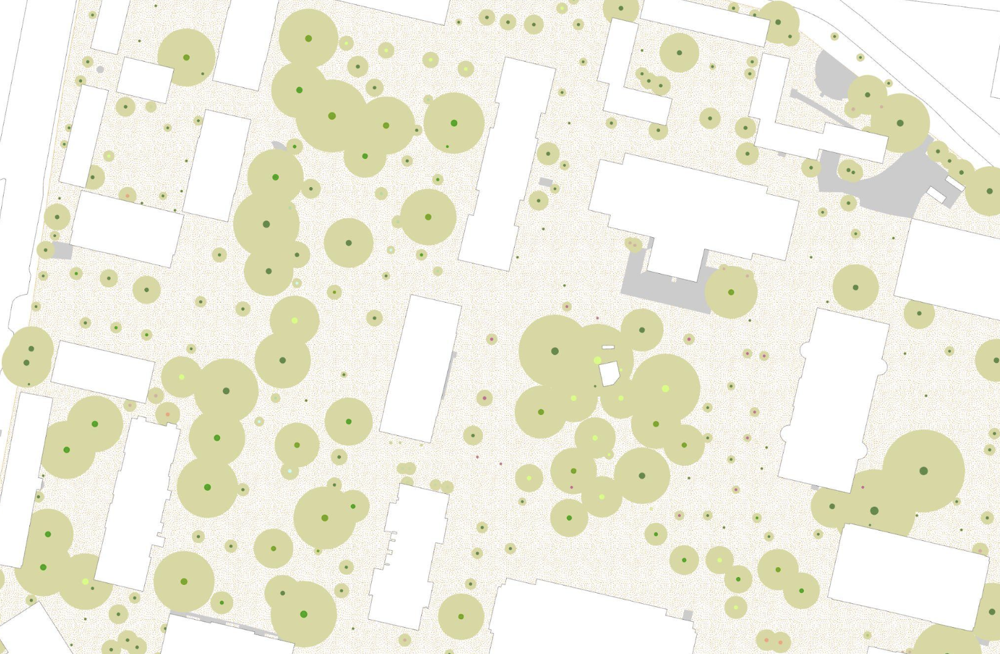

Re-Wilding Harvard, Spring 2024
During Spring 2024, the Harvard Map Collection embedded with history course Re-Wilding Harvard, taught by Professor Joyce Chaplin. From the syllabus, “re-wilding returns a place to an earlier form to promote biodiversity; urban re-wilding does this within urban spaces, including Harvard‚Äôs.”
Re-wilded site from 2021, at the Harvard Museum of Natural History.
In past iterations of the course, students studied historic dimensions of pre-colonial landscapes and ecosystems at Harvard and their impact on what exists now. Students have even re-wilded two sites, one at the Museum of Natural History, and another at the Business School. Throughout this learning, maps played a role in helping to understand places on campus, past and present. When Professor Chaplin and I met during a visit to the Map Collection in 2022, she was interested in the potential for beginning to introduce GIS in class, so students could engage more deeply with these topics.
In this article, we will focus on the ways our resulting partnership opened up outcomes previously inaccessible when we had to rely on drop-in models in the past, models where course librarians are limited by one or two course visits during the semester. We will also highlight the delightful geospatial findings of Re-Wilding students from Spring 2024.
Preparation
First, let’s talk about what we did to prepare. In the months leading up to the course, Professor Chaplin and I held a number of 1:1 technical sessions, where we conducted hands-on run-throughs of the workshop materials slated for class. Professor Chaplin’s interest and investment during these early stages paid off; it allowed us to be thoughtful and intentional when synthesizing the ways the library’s technical instruction during class would meld well with the course objectives.
During the semester, I visited four times. The first visit was a lecture-based introduction to GIS, showing off many project examples. The second visit was a hands-on workshop where students practiced georeferencing, the process of matching up historic maps to modern coordinates. The third visit was another hands-on workshop where we practiced extracting crunchable data from historic maps. Finally, I visited at the end of the semester for project presentations, and to discuss outcomes. I was available during the semester by appointment, and met with students throughout for technical troubleshooting and project feedback.
The projects
Though it was not required, most students in the course opted to use GIS for their final projects. One group of students newer to GIS but interested in learning more teamed up to create a Harvard-focused version of a tool we went over in class called OldNYC , which unites archival photographs in the holdings of the New York Public Library into one spatial web interface. In a data wrap-up and offboarding session, Alyssia Wiesenbauer ‘26 said, “I had zero GIS experience when I enrolled in the class. I didn’t really know what to expect at all, but I am definitely planning to use it in the future. It‚Äôs something I have in my toolbox now.” Others came into class with some GIS background, and hoping to expand it, chose to work towards exploring diverse elements of Harvard’s places and ecologies.
Old Harvard Yard
üñ≤Ô∏è Pan and click, or open in a new tab to explore Old Harvard Yard , by Emily Arbuiso, Avery Britt, Mia DiLorenzo, Nikita Nair, Hayden Teeter, Cody Vasquez, Alyssia Wiesenbauer.
“The idea behind our project is comparing photos of Harvard Yard today to that same exact place in the past. We did a big archival search of images of Harvard Yard throughout the years, which also included some drawings and sketches. We were able to capture that Harvard Yard might seem like this very historic, unchanging, traditional space. But in actuality, a lot of its key features have been changed and adapted over the years, for example, many of the trees weren‚Äôt even planted until the early twentieth century. So what does that mean for us when we‚Äôre envisioning a world where we might start to Re-Wild Harvard Yard? What does it say about other green spaces or seeming fixtures such as Widener Library, which was built in 1912? We were questioning the perception of static and integral elements of the yard, as they relate to green space.”
- Cody Vasquez ‘25
üí° Alyssia’s Highlights
“One little thing I noticed that was pretty fun was that the John Harvard statue was not there for quite a while. It was in front of Memorial Hall. So at first, looking at all these photos, I was like, where is the statue? I could not figure it out. Then all of a sudden I came across a picture of the statue in the old location and I thought, this feels so wrong in some ways, you know, being in this big open field.

Memorial Hall and John Harvard Statue, Harvard College
“Another thing I noticed is that there used to be a lot of conifers in the yard, which was interesting because I had this vision of what the yard was supposed to be with certain types of trees in certain areas. In my mind, the conifers are all by Robinson Hall, and in that corner. Then I found a couple right in front of University Hall, and some by Boylston, as well. That was just really neat seeing the different biodiversity that was all across the yard.
“I took a botany class this past semester, so I‚Äôve been looking at the plants on the Yard a little bit more closely. I think we have a tendency to see all of these trees in Harvard Yard and assume they're sort of the same thing. We don‚Äôt always have that eye for the detail. I'm not sure what the specific vision that the landscapers have for Harvard Yard is now. But, whatever it is, maybe conifers don't exactly fit. They aren't very tall. In the photos, there were stubby ones in sort of almost random locations. The one in front of University Hall was to the right of where the John Harvard statue is now.
“Today, when you walk through Johnston Gate, you have this clear view of University Hall. So, maybe there's thinking about which buildings you can see as you're looking through the yard, the way that the trees are placed in a manner where you have clear views of certain areas. At least now, a lot of those canopies are a little bit taller. So, you don't really have all of these bushy plants that would have obstructed the view of all the beautiful Ivy League buildings. And back then they actually did have Ivy on them!”
- Alyssia Wiesenbauer ‘26
üñ≤Ô∏è Pan and click to explore Alyssia's section of the Yard.
üí° Niki’s Highlights
“One big area of discussion that we've had in this class is with the term Re-Wilding. What is Re-Wilding? What are we going back to? One way our project contributed is by starting to poke by looking at pictures from 5, 10, 50, 100 years ago, we start to see that there hasn‚Äôt been a super consistent place to return to. Even the paths in the Yard have been retraced. So if we say, OK, they should be original, what are you choosing to set as the point of origin?
“My section was the area outside of Widener Library. It was very fun to look back into the history of Gore Hall. I‚Äôm a tour guide at Harvard, so I know about the history of Widener having once been Gore Hall before Mrs. Widener funded the new building with all of its stipulations. But it‚Äôs a totally different experience seeing the pictures. Looking in HOLLIS, I found images of Gore Hall windows being broken open so that they could transport books out when they wanted to demolish Gore Hall. And there are all sorts of other small details that interest me, such as which aesthetic elements Harvard has chosen to keep consistent, and which to change.”
- Nikita Nair ‘24
üí° Cody’s Highlights
“There's a building in Harvard Yard called Phillips Brooks House, and it‚Äôs a student-run service organization built in the late 19th century. I learned its original door faced outwards towards the community, and its address was One Harvard Yard. In our project, we included images showing how the front door switched to the other side, so now it's Harvard Yard facing.
| Community service at Phillips Brooks House, 1960s | Phillips Brooks House, 2024 |
|---|---|
 |
“The intention of the door facing the community was to welcome people into Harvard Yard. But then at some point, it was switched to be kind of a more insular building.
“There's definitely some cool drawings that start to show where the trees were. It's hard to tell if the artists were drawing pretty trees just to draw pretty trees, or if they were showing the exact spot that they were. If you‚Äôre facing Harvard yard from one of the T stops, there's a drawing that shows rolling hills in the distance and some trees.”
- Cody Vasquez ‘25
üí° Hayden’s Highlights
üñ≤Ô∏è Pan and click to explore Hayden's section of the Yard.
“I had the section of the yard that's in the southeast corner where Lamont Library is. It's also where the President's House is. It‚Äôs the most sparse area of the yard by a lot. It used to be completely different; there was a lot less there.
| Moving the Dana-Palmer House, photograph, 1947 | Lamont Library, 2024 |
|---|---|
 |
 |
“The Dana Palmer house, which is now in the location of the Barker Center, was actually just picked up off its foundation and moved across the street. It was cool to see what they did with the last part of Harvard that was still left to be developed. They added Pusey Library in the seventies. ”
- Hayden Teeter ‘24
Harvard Yard microhabitats
Boya Zhou, GSD ‘24, used GIS and section drawings to understand the diversity in the microhabitats of Harvard Yard.
 Map of underground diversity, based on location and type of trees and presumed root structure.
Different combinations of conditions such as building shade, tree canopy, paths, and roots to form microhabitats in the Yard.
 Seeming homogeneity between Matthews and Weld Halls.
Seeming homogeneity between Matthews and Weld Halls.
Boya’s section drawing depicting various possible microhabitats in the yard.
More GIS projects
Other projects focused on comparing green space and tree cover across centuries, leveraging maps from the Harvard Map Collection, and data shared by Harvard University Planning and Design . Others used spatial analysis to identify viable locations for future re-wilding spots, based on distance from a number of variables, including transit stops, public schools, and walkways.
Hannah Adler ‘25 started to explore the relationship of built and undeveloped land along the Charles River.
“I was interested in the Harvard Square adjacent area near the river, because today we think of the river walkways and Memorial Drive, especially when it‚Äôs closed as a really valuable open space.
“I also had seen this image in HOLLIS that conveys a certain set of aesthetic ideals with how people were imagining the riverside could be.” - Hannah Adler

Hannah created parcel data for four slices of time between 1873 and 1930, and tagged each historic parcel with information about whether it had buildings developed on it, as well as ownership information. During Re-Wilding Harvard, she piloted methods for understanding the spatial relationships of these variables, and plans to join the Map Collection in a paid assistantship this summer, where she’ll refine her methods, create additional meaningful spatial datasets from the maps in our collections, and continue building out our spatial data collections for Research, Teaching, and Learning.